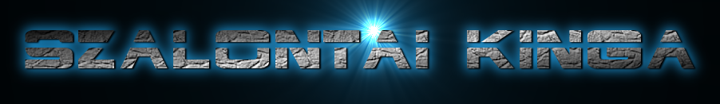

|  |
|
Eredeti terveim szerint, a honlapon megpróbáltam tükrözni a saját személyiségemet. A logó az asztrofizika iránti vonzódásom. A háttér a gépész létem, a gombok pedig, mint egy régebbi típusú billentyűzet az egyik példaképem, édesapám miatt, aki villamosmérnök.(bár a tehetségéből nem sok ragadt rám) A kódsort htmlben kezdtem el leprogramozni, mert univerzális, így ha esetleg szabadfelhasználású licenszként jelenítem meg, akkor is mind Linux felhasználó, mind windows felhasználó tudja kezelni. Illetve az egyetem kezdésig Linuxot használtam (Kubuntu) és ezzel a programmal már ott találkoztam. Az egyetemen a WIN_10 re kellett áttérnem és szerencsére azon is fut a számomra már ismertebb html. Persze néhány után igazításra szükségem volt például az alapértelmezett szövegszerkesztési kódtáblák átállítása. Valamint a hivatkozási fájlok defaultjai (alapértelmezései) mások, ezeket utána kell igazítani. A gombokat képként készítettem el, amivel aztán probélám is lett, mert sokáig nem sikerült jól beírnom a hivatkozást. A 3.oldalhoz nem nagyon volt ötletem így lett végül egyfajta vizuális idővonal, és mint a műszaki rajzoknál a legelső van legalul.:) |